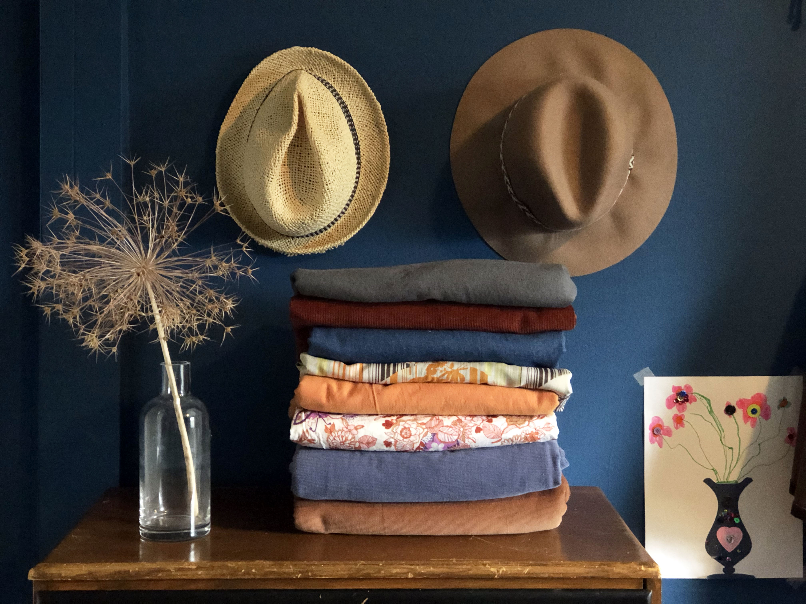

September 27, 2019
Fall Fabric Stash
Fall is here and is my absolute favorite time of year. The leaves start to turn all my favorite colors. The sun is at a lower angle, given everything a nice glow, especially in the late afternoon. The air takes on a chill, giving me the opportunity to break out my comfy, knit sweaters.
A few years ago I discovered the idea of the caspule wardrobe and it really resonated with me. At the time I had a closet full of clothes but really only wore the same things over and over. None of my stuff went together and getting outfits together was overwhelming. So I picked out a set number of items for a specific season and the rest went into storage. This has worked really well for me. I'm able to put together outfits easily and quickly.
Earlier this week I was looking at my overwhelming fabric stash for ideas for fall projects it dawned on me: I could do the same capsule idea for my fabric. So I pulled out fabrics that all went together in a variety of textures and weights. Suddenly I had a whole list of projects to choose from: Grey Arenite Pants (already made), Raspberry Rucksack in red upholstry corduroy, York Pinafore in blue stretch denim, extra looooog Wiksten Haori in retro brown, orange and yellow silk, Pinnacle Top in orange woven cotton, Matcha Top in an orange and purple light woven cotton, Persphone Pants in blue corduroy and last but not least: Lander Pants in carmel stretch corduroy.
I've had the ideas of most of these projects for sometime and was unable to really get started or know where to begin but once I had the fabrics all laid out, my plan came together quickly. Now, it's time to get to it!